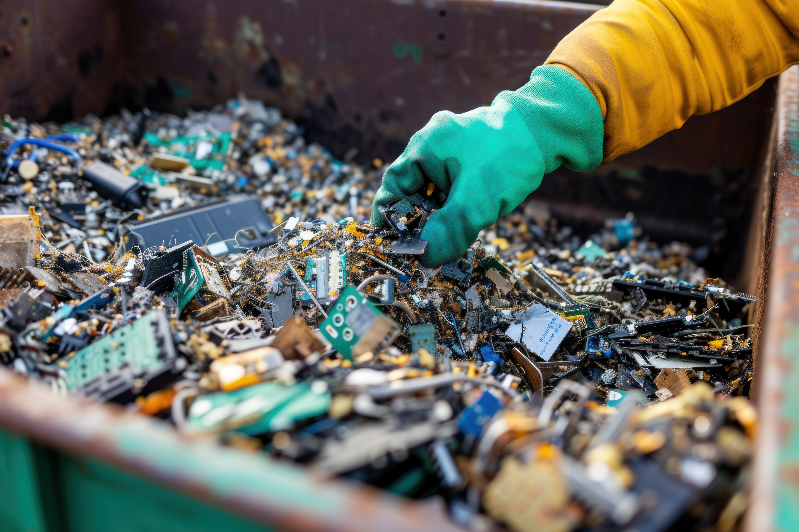

AI systems rely on advanced semiconductor chips. Manufacturing these chips requires rare earth elements, ultrapure water, specialized chemicals, and energy-intensive fabrication processes.
Chip fabrication facilities are highly resource-dependent and generate chemical byproducts that require careful management.
Hardware production depends on mining materials such as lithium, cobalt, and other rare metals. Extraction processes carry environmental and geopolitical consequences.
Rapid advancement in AI hardware shortens equipment lifespans. Frequent replacement contributes to electronic waste.

| Component | Environmental Issue | Long-Term Effect |
|---|---|---|
| Rare Earth Mining | Habitat disruption and pollution | Resource depletion |
| Semiconductor Fabrication | Chemical waste and high energy use | Industrial emissions |
| Hardware Turnover | Short device lifecycle | Increased e-waste |
| Recycling Systems | Recovery efficiency | Waste reduction potential |
Material extraction and disposal represent a less visible but significant component of AI’s environmental footprint.